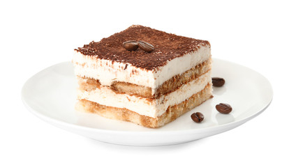

Home
Tiramisu

To make a classic Italian tiramisù, you begin by whisking egg yolks with sugar until creamy and then folding in rich mascarpone cheese to create a smooth filling. In a separate bowl, you whip egg whites to stiff peaks and gently incorporate them into the mascarpone mixture to ensure a light and airy texture. You then quickly dip ladyfinger biscuits into cold, strong espresso coffee—being careful not to soak them too much—and arrange them in a neat layer at the bottom of a dish. After spreading half of the cream over the biscuits, you repeat the process with another layer of dipped ladyfingers and the remaining cream. Finally, you let the dessert chill in the refrigerator for at least four hours to allow the flavors to meld together, finishing it with a generous dusting of unsweetened cocoa powder just before serving.
- 500g Mascarpone cheese
- 300g Savoiardi
- 4 Large eggs
- 100g Granulated sugar
- 300ml Strong espresso coffee
- 2 Tablespoons of unsweetened cocoa powder
- Optional: 2 tablespoons of Marsala wine or dark rum
- Prepare a few cups of strong espresso coffee and let it cool completely in a shallow bowl.
- In a large bowl, whisk the egg yolks and sugar together until the mixture is pale and creamy.
- Gently fold the mascarpone cheese into the yolk mixture until smooth and well-combined.
- In a separate clean bowl, beat the egg whites until they form stiff peaks, then fold them very gently into the mascarpone cream.
- Quickly dip each ladyfinger into the cold coffee, ensuring they are soaked but still firm enough to hold their shape.
- Arrange a layer of the soaked ladyfingers at the bottom of a rectangular serving dish.
- Spread half of the mascarpone cream over the first layer of biscuits, smoothing it out with a spatula.
- Add a second layer of coffee-dipped ladyfingers on top of the cream.
- Cover with the remaining mascarpone cream and level the surface.
- Refrigerate the dessert for at least 4 to 6 hours (or overnight) to allow the layers to set and the flavors to develop.
- Just before serving, use a sieve to dust a thick layer of unsweetened cocoa powder over the top.